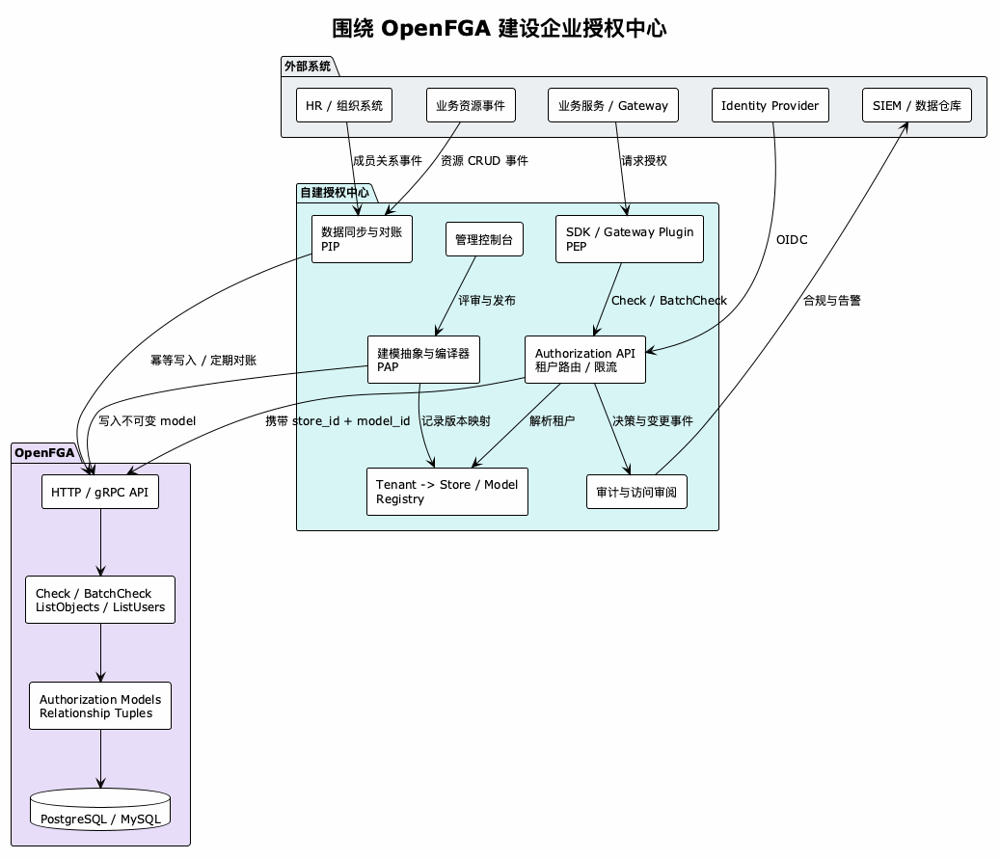
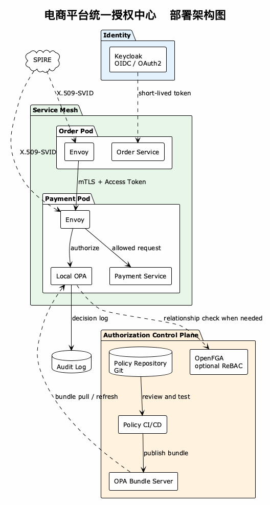
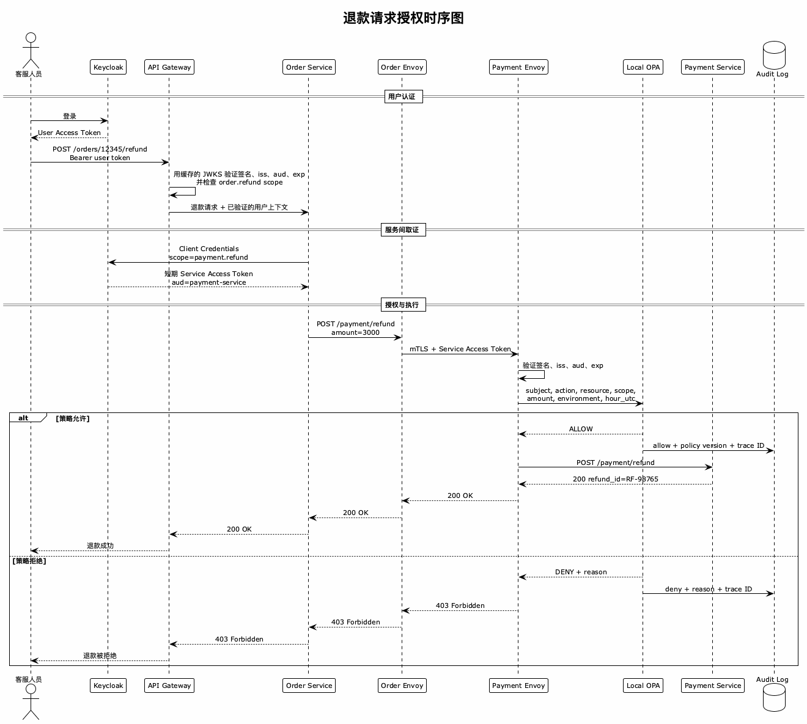

如何为你的服务创建统一的授权中心
Posted on 一 20 7月 2026 in Tech
| Abstract | 如何为你的服务创建统一的授权中心 |
|---|---|
| Authors | Walter Fan |
| Category | Cloud / Security |
| Status | v1.0 |
| Updated | 2026-07-20 |
| License | CC-BY-NC-ND 4.0 |
为什么需要授权中心
服务少时，一句 if user.is_admin 很省事。服务多起来，权限会散落在代码、配置和网关里：改一条规则要发几个服务，查一次越权要翻半天日志，最后没人能准确回答“谁能调用谁”。
问题不在于少装了一个工具，而在于没有统一的策略来源。授权中心的价值，是集中管理策略，并让网关、Sidecar 或服务在合适的位置执行它。
下面先拆清身份、决策和执行，再讨论协议、实例与演进路线。
一、先拆清三个系统
微服务里的访问控制最好拆成三个关注点：
| 系统 | 回答的问题 | 典型实现 |
|---|---|---|
| Identity Provider | 你是谁？ | Keycloak, Entra ID, Auth0, Okta |
| Authorization Center | 你是否有权限？ | OPA, OpenFGA, Cedar, Casbin |
| Policy Enforcement Point（PEP） | 是否放行这次调用？ | 服务中间件、Envoy、Istio、Kong |
Keycloak 也有授权能力，小系统完全可以先用；但当策略包含跨服务属性、动态条件或对象关系时，通常会把决策独立为 PDP（Policy Decision Point），由 OPA、OpenFGA 等组件承担。
二、调用流程：授权发生在哪一层？
以 Order Service 调用 Payment Service 退款为例：
User
│
│ Login (OIDC)
v
Keycloak ───► 签发 JWT Access Token
│
│ Token 随请求传递
v
Order Service
│
│ 发起退款请求（携带自身 Service Token）
v
Payment Sidecar ──► 拦截入站请求
│
│ 调用本地 OPA
│ 传入: subject=order-service, action=POST,
│ resource=/payment/refund, scope=payment.refund
v
OPA ──► 策略判定: Allow / Deny
│
├── Allow ──► Payment Service 正常处理
│
└── Deny ──► 返回 403，记录审计日志
网关和 Sidecar 适合检查身份、audience、Scope、路径等通用规则。涉及订单归属、余额或审批状态的判断仍要由业务服务提供属性，甚至留在业务层执行。把所有授权都塞进 Sidecar，只是把散落的 if 换了一个藏身之处。
三、授权中心应该管什么？
授权中心不能只管 Role。完整决策至少要能表达：
| 要素 | 含义 | 示例 |
|---|---|---|
| Subject | 谁在发起请求 | order-service, user:walter |
| Action | 要做什么操作 | POST, READ, DELETE |
| Resource | 操作的对象 | /payment/refund, doc:12345 |
| Condition | 附加条件 | region == us-west, time < 18:00 |
| Scope | OAuth2 作用域 | payment.write, payment.refund |
| Tenant | 租户隔离 | companyA, tenant-xyz |
| Environment | 环境限制 | production, staging |
| Attributes | 扩展属性 | risk_level: high, department: finance |
例如：
- subject: order-service
action: POST
resource: /payment/refund
condition:
region: us-west
amount_usd: { lte: 10000 }
scope:
- payment.write
- payment.refund
tenant: companyA
environment: production
effect: allow
这已经不是简单的 RBAC，而是基于属性的 ABAC。若还要表达“项目成员可以编辑项目下的文档”，则需要 ReBAC（关系型访问控制）。
四、OAuth2 Scope：微服务间授权的常用载体
Role 适合表达人的职责，如 Admin、Developer、Operator；服务身份更适合用 Scope 表达被授予的操作：
payment.read -- 读取支付信息
payment.write -- 创建支付
payment.refund -- 发起退款
JWT Access Token 里这样携带：
{
"iss": "https://auth.example.com",
"sub": "order-service",
"aud": "payment-service",
"exp": 1721473200,
"scope": "payment.read payment.write payment.refund"
}
Payment Service 同时验证签名、iss、aud、exp，再确认 Token 包含 payment.refund。只检查 Scope 不够。
Scope 命名最佳实践
{resource}.{action}
Examples:
payment.read
payment.write
inventory.query
order.cancel
user.profile.read -- 嵌套资源用 . 分隔
避免 admin、* 这类万能 Scope，也不要把多个动作绑成 read-write。
五、协议和组件怎么分工
不要把这些名字堆成“全家桶”。它们解决的是不同问题，按需选择即可。
| 层次 | 解决什么问题 | 常见选择 | 何时需要 |
|---|---|---|---|
| 用户认证 | 用户是谁 | OIDC；Keycloak、Entra ID、Auth0、Okta | 有用户登录时 |
| 服务取证 | 服务如何获得受限令牌 | OAuth2 Client Credentials | 服务间使用 Access Token 时 |
| 令牌格式 | 如何携带 sub、aud、exp、scope |
JWT（RFC 7519）或 opaque token | 需要跨组件传递授权上下文时 |
| 工作负载身份 | 当前 Pod/进程是否可信 | SPIFFE/SPIRE、X.509-SVID、mTLS | Kubernetes、多集群或零信任网络 |
| 属性策略 | 条件满足时是否允许 | OPA/Rego、Cedar、Casbin | 出现金额、地域、环境等条件时 |
| 关系授权 | 谁与哪个对象有什么关系 | OpenFGA | 文档共享、组织层级、对象级权限 |
| 策略执行 | 在哪里拦截请求 | 业务中间件、Gateway、Envoy/Istio | 所有系统都需要 |
几个边界要守住：
- ID Token 用来向客户端证明登录身份；调用 API 应使用 Access Token。
- JWT 不等于 OAuth2，也不是唯一 Token 格式。选择 JWT 意味着接受短期内难以即时撤销的权衡。
- SPIFFE 证明工作负载身份，不替代用户授权或业务权限。
- OPA 与 OpenFGA 不是必选组合。只有同时存在复杂条件和资源关系时，才值得一起上。
六、别让授权中心进入单点热路径
每次 RPC 都远程查询授权中心，中心一慢，所有服务跟着慢。对于 Scope 和属性策略，可以把 OPA Bundle 下发到本地执行：
Authorization Center (策略存储)
│
│ Bundle pull / periodic refresh
v
Envoy Sidecar (本地 OPA)
│
│ 本地策略评估
v
Business Logic
这种“中心管理、就近执行”能降低延迟，也能在控制面短暂故障时继续使用最后一版有效策略。具体延迟必须在真实策略和硬件上测试，不应拿“低于 1ms”当承诺。
关系授权不同。OpenFGA 的关系数据变化频繁，通常仍要查询服务端；缓存必须明确一致性窗口、失效方式和高风险操作的 fail-closed 策略。授权系统不可用时究竟拒绝、降级还是使用旧策略，也要按接口风险预先定义，不能临时拍脑袋。
七、Policy Store：策略也要走工程流程
策略可以是 YAML/JSON，也可以是 Rego。形式不重要，关键是可审查、可测试、可回滚。例如：
# 声明式格式（适合简单场景）
policies:
- id: order-can-refund
subject: order-service
resource: payment-service
action: POST
path: /payment/refund
scopes:
- payment.refund
conditions:
environment: production
amount_usd: { lte: 10000 }
effect: allow
| 能力 | 说明 |
|---|---|
| 版本管理 | 每次策略变更有版本号和变更人 |
| 审计日志 | 谁在什么时候改了什么策略 |
| 灰度发布 | 先 shadow，再 canary，最后全量 |
| 回滚 | 一键回到上个版本 |
| 测试 | 策略变更前可以跑单测和集成测试 |
| 影响分析 | 用历史请求回放，估算新增 allow/deny |
八、七个常见陷阱
| 陷阱 | 后果 | 改法 |
|---|---|---|
| 认证等于授权 | 登录成功就能访问过多资源 | 分开 AuthN 与 AuthZ |
服务拿 Admin Role |
一个凭证泄露即可横向移动 | 使用最小 Scope，并校验 aud |
admin、* 万能 Scope |
名义上有授权，实际上全放开 | 按 {resource}.{action} 拆分 |
| 每次远程鉴权 | PDP 故障拖垮业务链路 | 静态策略本地执行；远程决策设超时与降级规则 |
| 只记 allow，不记 deny | 无法发现探测和越权尝试 | 记录决策、原因、策略版本和 trace ID |
| 策略直接全量发布 | 一处拼写错误造成大面积 403 | lint → test → shadow → canary → rollout |
| JWT 活得太久 | 权限收回后 Token 仍有效 | 短期 Token；高风险操作使用实时决策或撤销机制 |
九、主流开源方案速查表
| 层次 | 推荐项目 | 核心能力 | 适用场景 |
|---|---|---|---|
| 身份认证 (IdP) | Keycloak | OAuth2, OIDC, SAML, User Federation | 统一用户/服务身份管理 |
| 策略授权 (ABAC) | Open Policy Agent (OPA) | Rego 语言, Bundle 分发, 可嵌入 | API 授权、K8s Admission、基础设施策略 |
| 关系授权 (ReBAC) | OpenFGA | Zanzibar 模型, 关系图, Check/ListObjects API | 文档共享、组织层级、多租户资源 |
| 通用策略引擎 | Cedar (AWS) | 类型化策略、Schema 和自动化分析工具 | 需要严格策略建模的场景 |
| 服务身份 | SPIFFE / SPIRE | X.509-SVID, JWT-SVID, Workload Attestation | K8s 环境下的 Zero Trust 服务身份 |
| Service Mesh | Istio | Envoy + mTLS + AuthorizationPolicy | 服务间通信的统一安全层 |
| API Gateway | Kong / APISIX | 认证插件 + Rate Limit + ACL | 南北向流量管控 |
十、以 OpenFGA 为核心做二次开发
OpenFGA 于 2025 年 10 月 28 日进入 CNCF Incubating。截至 2026 年 7 月，最新版本是 v1.18.0。它提供 HTTP 和 gRPC API，生产存储支持 PostgreSQL 14+ 与 MySQL 8，SQLite 仍标为 beta。它以 ReBAC 为核心，通过 Conditions 和 Contextual Tuples 覆盖部分 ABAC 场景。
版本号会过期，更重要的是这个判断：
OpenFGA 是授权决策引擎，不是完整的企业授权中心。
它擅长回答“用户 U 是否能对对象 O 执行关系 R”，但不替你完成业务建模、身份接入、关系同步、租户治理、审批发布和合规审计。二次开发的主要工作在引擎周围，而不在修改引擎。

两条开发路线
路线 A：环绕式开发，默认选择。 使用官方镜像或 Helm Chart 部署 OpenFGA，在外面建设 Authorization API、控制台、同步任务、审计和 SDK。这样可以跟随上游安全更新，不必长期维护 fork。
路线 B：嵌入或扩展核心。 OpenFGA 可以作为 Go library 嵌入，但只适合确有自定义存储、进程内部署或拦截器需求的团队。优先包一层服务或中间件，最后才考虑 fork 主仓库。
多数企业会以路线 A 为主，只在少数集成点采用路线 B。
真正要建设的六个模块
| 模块 | 要解决的问题 | 关键做法 |
|---|---|---|
| 建模抽象层（PAP） | 业务方看不懂底层 DSL | 把角色、权限集、资源组编译成 model 和 tuples |
| 数据同步（PIP） | FGA 关系与真实组织、资源漂移 | 事件增量同步 + 定期对账；写入必须幂等 |
| 多租户治理 | tenant 如何映射到 store 和 model | 维护映射、配额、生命周期与隔离策略 |
| 鉴权集成（PEP） | 应用在哪里调用决策 | SDK、Gateway 插件或 Sidecar；监控 p99，批量场景用 BatchCheck |
| 模型生命周期 | 模型如何评审、灰度和回滚 | 固定 authorization_model_id，经测试后切换版本 |
| 审计与合规 | 谁改了权限、谁能访问什么 | 记录写操作和必要的决策；生成访问审阅报表 |
其中最容易被低估的是 PIP。OpenFGA 中的 tuple 只是关系事实的副本，权威数据仍在 HR、组织系统和业务数据库。消息可能重复、乱序或丢失，所以同步链路既要幂等，也要有 reconciliation 任务定期纠偏。
多租户：先选隔离边界
OpenFGA 的 store 隔离 model 和 tuples，store 之间不能共享关系。常见选择是：
- 一租户一 store：隔离强，可以独立演进；代价是 store、model 和迁移数量快速增长。
- 共享 store，ID 带 tenant 前缀：管理简单；隔离依赖应用约束，一次漏前缀就可能越权。
- 分级混合：高风险或大型租户独立 store，普通租户按业务域共享。
不要只按租户数量决定。合规边界、跨租户关系、模型演进速度和运维能力更重要。无论选哪种，都应由授权中心维护 tenant -> store_id -> model_id 映射，业务应用不要自己拼。
四个必须提前定的技术决策
1. 一致性还是延迟。 OpenFGA 的查询支持 MINIMIZE_LATENCY 和 HIGHER_CONSISTENCY。启用缓存或只读副本后，刚写入的关系可能暂时读不到。写后立即鉴权时，可以按请求选择更高一致性，或用 Contextual Tuples 将尚未持久化的关系带入本次判断。不要全局强制高一致性，它会把压力直接推给主库。
2. 反向查询的成本。 Check 只判断一个关系；ListObjects、ListUsers 要遍历更大的关系图，复杂模型下更容易碰到超时和结果上限。设计 model 时就要测试正向与反向查询，不能只验证 Check。
3. 高可用的重心。 Authorization API 与 OpenFGA 节点都应按无状态计算层水平扩展，真正持久化的状态在数据库。生产 HA 要优先处理数据库备份、复制、迁移和连接池，再考虑增加多少 Pod。
4. 安全边界。 OpenFGA 支持 pre-shared key 或 OIDC 认证；生产环境还应通过反向代理或 Service Mesh 建立 TLS/mTLS、网络隔离和限流。关闭 Playground，不把 PDP 直接暴露给终端或不受信任的业务网络，并及时跟随安全版本。
OpenFGA 曾出现过影响授权结果的安全公告。对一个 PDP 来说，“偶尔算错一次”也不可接受，因此升级和回归测试必须进入日常运维，而不是年底再说。
推荐落地顺序
- 用 CLI 和 Docker 建模一个边界清晰的核心场景，写出 allow 与 deny 断言。
- 验证
Check、BatchCheck、ListObjects的语义、延迟和一致性。 - 建立模型仓库，固定并发布
authorization_model_id。 - 接入一个业务的事件同步与定期对账。
- 最后再做控制台、审批、访问审阅和多租户自动化。
先做灯塔项目，别一上来迁移全公司的权限。授权模型选错一次，后面的控制台做得再漂亮，也只是给返工加了个皮肤。
十一、一个典型实例：电商平台退款
用一个电商场景把前面的设计串起来。
业务场景
客服通过 API Gateway 发起退款，Order Service 再调用 Payment Service。规则只有四条：
- 只有 Order Service 能调用 Payment Service 的退款接口
- 单笔退款金额不能超过 10000 美元
- 只允许在生产环境的工作时间（9:00-18:00 UTC）内执行大额退款（>1000 美元）
- 所有退款操作必须有审计记录
架构图

时序图：退款请求的完整授权流程

对应的 OPA 策略（完整版）
package ecommerce.payment.authz
import rego.v1
default allow := false
# 公共条件只写一次，避免规则漂移。
valid_refund_request if {
input.subject == "order-service"
input.action == "POST"
input.resource == "/payment/refund"
input.audience == "payment-service"
"payment.refund" in input.scopes
input.attributes.amount_usd > 0
}
# 小额退款不受工作时间限制。
allow if {
valid_refund_request
input.attributes.amount_usd <= 1000
}
# 大额退款只能在生产环境的工作时间执行。
allow if {
valid_refund_request
input.attributes.amount_usd > 1000
input.attributes.amount_usd <= 10000
input.environment == "production"
input.context.hour_utc >= 9
input.context.hour_utc < 18
}
allow if {
input.subject == "order-service"
input.action == "GET"
startswith(input.resource, "/payment/")
input.audience == "payment-service"
"payment.read" in input.scopes
}
这段策略默认拒绝，只开放两条明确路径。时间由请求上下文传入，便于测试和回放；PEP 还应独立验证 Token 签名、iss、exp，不要把所有责任都压给 Rego。
审计日志格式
每次授权决策产生一条结构化日志：
{
"timestamp": "2026-07-20T14:30:05.123Z",
"decision": "allow",
"subject": "order-service",
"action": "POST",
"resource": "/payment/refund",
"scopes": ["payment.refund"],
"attributes": {
"amount_usd": 3000,
"order_id": "12345",
"triggered_by": "user:cs-agent-01"
},
"environment": "production",
"policy_version": "v2.3.1",
"evaluation_time_ms": 0.4,
"spiffe_id": "spiffe://example.com/ns/production/sa/order-service",
"trace_id": "abc123def456"
}
这条日志能串起操作人、调用服务、业务对象、策略版本和 Trace。注意不要记录 Token、密钥或不必要的个人数据。
十二、技术演进路线图：按问题升级，不按名词堆料
下面的人数和服务数只是参照，不是门槛。真正的升级信号，是现有方案已经无法控制风险和变更成本。
| 阶段 | 典型组织 | 够用的方案 | 升级信号 |
|---|---|---|---|
| Level 0 | 创业团队；单体或 1-3 个服务 | 框架中间件 + 简单 RBAC | 出现部门、资源归属等条件 |
| Level 1 | 成长团队；约 5-15 个服务 | 统一 IdP + JWT Scope + API Gateway | 策略变更频繁、需要集中审计 |
| Level 2 | 平台团队；约 15-50 个服务 | OPA + Policy-as-Code + 集中审计；按需引入 SPIFFE/Istio | 出现多租户、共享关系和对象级权限 |
| Level 3 | 大型平台；多团队、多地域 | OPA + OpenFGA + 多集群身份 + 完整治理 | 已进入持续治理阶段 |
Level 0：先把权限收口
使用 Spring Security、Django permission 等框架能力即可。认证和授权分开，权限判断集中在 middleware 或 decorator，避免散落在业务函数里。两三个角色能解决问题，就不要提前建设“平台”。
当规则开始出现“只能看自己部门的数据”或“只能修改自己创建的资源”，简单 RBAC 已经吃力，应进入下一阶段。
Level 1：统一身份和 Scope
引入统一 IdP。服务通过 Client Credentials 获取短期 Access Token，并验证签名、iss、aud、exp 和 Scope。公共验证逻辑做成中间件；Gateway 负责外部流量的粗粒度检查，服务仍对自己的资源负责。
这一阶段最重要的产物不是 Keycloak 集群，而是一套稳定的 Scope 命名和最小权限规则。若改策略必须发布多个服务，或安全团队已无法回答“谁能访问什么”，再进入 Level 2。
Level 2：把策略从服务中拿出来
用 OPA 等 PDP 承载跨服务的属性策略，策略进入 Git，变更经过测试、shadow、canary 和回滚。决策日志集中保存。Kubernetes 环境若确实需要统一工作负载身份和 mTLS，再引入 SPIFFE/SPIRE；只有已经具备平台团队时，才考虑 Istio。
这一级的关键变化，是授权从业务代码变成平台能力，但资源属性仍由业务服务负责。出现文档共享、组织继承、多租户对象关系时，再引入 ReBAC。
Level 3：治理复杂关系和跨地域风险
在 OPA 处理条件策略的基础上，用 OpenFGA 管对象关系；用多集群身份体系解决跨地域信任。平台还应提供策略影响分析、租户隔离、限时 Break-Glass、权限矩阵和 SIEM 对接。
到了这一级，难点已不是“选 OPA 还是 OpenFGA”，而是数据一致性、策略所有权和跨团队治理。
演进原则
- 按痛点升级：没有复杂关系，就不要上 OpenFGA；没有平台团队，就慎上 Istio。
- 先统一语义：Subject、Resource、Action、Scope 和 Tenant 的定义，比工具选型更早。
- 默认拒绝：新增资源必须显式授权；高风险接口故障时 fail closed。
- 保留退出路径：策略、关系数据和审计格式不要被某个产品私有模型锁死。
- 把撤权当主流程：授予容易，及时回收、Token 失效和权限盘点更重要。
十三、参考资料
核心协议和标准
- RFC 6749 - OAuth 2.0 Authorization Framework
- RFC 7519 - JSON Web Token (JWT)
- RFC 8725 - JWT Best Current Practices
- RFC 6750 - Bearer Token Usage
- OpenID Connect Core 1.0
- SPIFFE Specification
- Google Zanzibar Paper (2019)
开源项目
- Open Policy Agent (OPA) — 通用策略引擎
- OpenFGA — 关系型授权引擎（Zanzibar 实现）
- Keycloak — 开源 Identity & Access Management
- SPIRE — SPIFFE 运行时实现
- Cedar — AWS 开源的策略语言，支持形式化验证
- Casbin — 轻量级通用授权库
OpenFGA 深入资料
- OpenFGA | CNCF — 项目成熟度与 CNCF 状态
- OpenFGA Releases — 版本和安全修复
- Configuring OpenFGA — 存储、认证与部署参数
- Immutable Authorization Models — 模型版本和 model ID
- Query Consistency Modes — 一致性与缓存权衡
- Contextual Tuples — 请求内临时关系
- OpenFGA Concepts — store、model 与 tuple 的边界
- Official OpenFGA Helm Charts — Kubernetes 部署
- OpenFGA Security Advisories — 安全公告
相关架构模式
写在最后
授权这件事，本质上是在回答一个组织治理问题：谁应该信任谁，到什么程度。 技术只是把这个问题的答案编码成可执行的策略。
统一授权中心不是让你写一个"万能的权限网关"，而是建立一套"策略管理的单一事实源"——策略在哪里定义、谁能修改、怎么分发、出了问题怎么回滚，这些流程清楚了，技术选型反而是最简单的那一步。
本文是授权系列的第三篇，前两篇： - 授权的领域模型：从 RBAC、ABAC 到 Keycloak、Vault 的一张全景图 - 用开源组件搭一个 AWS IAM 风格的授权系统
本作品采用知识共享署名-非商业性使用-禁止演绎 4.0 国际许可协议进行许可。 欢迎在我的个人网站 https://www.fanyamin.com 访问原文并评论。